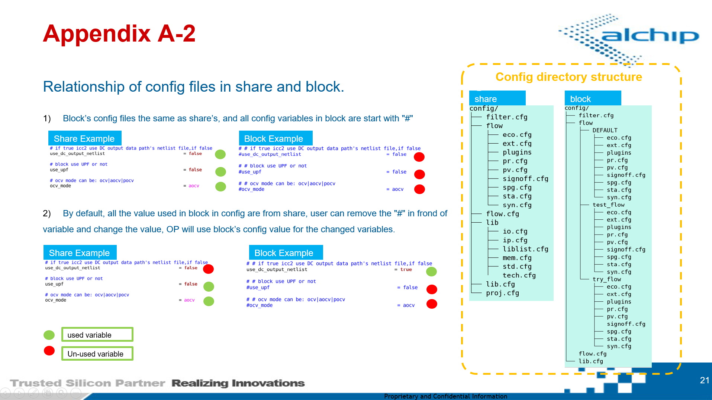

EDA Tool Config User Manual¶
EDA tool config and plugin files are used to configurate tools run flow.
EDA flow overview:
User can change config and plugin files to customize a suitable block flow.
$PROJ_ROOT/share/config/flow/<type>.cfg (syn.cfg, pricc2.cfg, prinvs.cfg, ext.cfg …)
- After PL initialize project, All EDA tool’s config files and plugin files are contain in this directory.
$Block_root/run/$netlist_version/$flow_name/<type>.cfg (syn.cfg, pricc2.cfg, prinvs.cfg, ext.cfg …)
- By default, block config file are checkout from
share/. - By default, all variables in block config file are comment with “#”.
- Remove “#”, variables will be overwritten
share/variables. - The variables in block config start with “#” always take the value from share, even the value are different.
- By default, block config file are checkout from
Config file variable overwritten

EDA config file list:
+ $PROJ_ROOT/share/config/flow/syn.cfg
+ $PROJ_ROOT/share/config/flow/pricc2.cfg
+ $PROJ_ROOT/share/config/flow/prinvs.cfg
+ $PROJ_ROOT/share/config/flow/ext.cfg
+ $PROJ_ROOT/share/config/flow/sta.cfg
+ $PROJ_ROOT/share/config/flow/fm.cfg
+ $PROJ_ROOT/share/config/flow/pv.cfg
+ $PROJ_ROOT/share/config/flow/ele.cfg
+ other EDA tool config files ...
EDA plugin directory list:
+ $PROJ_ROOT/share/config/flow/plugins/icc2_scripts
+ $PROJ_ROOT/share/config/flow/plugins/invs_scripts
+ $PROJ_ROOT/share/config/flow/plugins/dc_scripts
+ $PROJ_ROOT/share/config/flow/plugins/spyglass_scripts
+ $PROJ_ROOT/share/config/flow/plugins/fm_scripts
+ $PROJ_ROOT/share/config/flow/plugins/pt_scripts
+ $PROJ_ROOT/share/config/flow/plugins/signoff_scripts
+ other EDA tool plugin directory ...
Note
Block owner can only change config and plugin files to affect render-out scripts.
Template files should only been control and modified by PL
Of cause, PL can assign delicate engineer maintain template.
Config file syn.cfg and plugins/dc_scripts¶
The syn.cfg is used for synthesis (DC/DCG) run control.
| stage name: | syn |
|---|---|
| sub stage name: | syn.tcl |
- Sections
- Section:
- [DEFAULT]
- [syn.tcl]
- Description:
- [DEFAULT] section is used to define common varaibles used for all tempaltes at syn stage.
- [syn.tcl] section is used to define variables used for this tempalte
syn.tclonly.
Variables
_job_cmd: job submit command, ex.bsub -Is_job_queue: job queue name, ex.-q mars_job_cpu_number: job core number, ex, -n 4_job_resource: job resource required, ex. -R “centos6 span[hosts=1]” / -R “centos6 select[mem>20000] rusage[mem=20000]”_exec_cmd: EDA run command, ex. dc_shell -output_log_file dc.log -f_exec_tool: module load EDA tool version, ex. module load synopsys/syn_vM-2016.12-SP2......
Note
Due to paragraph limit, not all the variables are explian in this Manual. We will plan to expend varaibles explication in this Manual in the future accroding to user’s feedback.
Example:
_job_cmd = bsub -Is
_job_queue = -q beige
_job_cpu_number = -n 4
_job_resource = -R "centos6 span[hosts=1]"
_exec_cmd = dc_shell -output_log_file dc.log -f
_exec_tool = module load synopsys/syn_vM-2016.12-SP2
Tip
Variables defined in [DEFAULT] can be re-defined in other section, other section’s value will overwrite [DEFAULT] one.
Example:
[DEFAULT]
_job_cpu_number = -n 4
[syn.tcl]
_job_cpu_number = -n 8
In rendered syn.tcl scripts, _job_cpu_number is equal to “-n 8”
Config file pricc2.cfg and plugins/icc2_scripts¶
The pricc2.cfg is used for P&R stage (ICC2) run control.
| stage name: | pricc2 |
|---|---|
| sub stage name: | 01_fp.tcl, 02_place.tcl, 03_clock.tcl, 04_clock_opt.tcl, 05_route.tcl, 06_route_opt.tcl, 07_eco.tcl, 08_finish.tcl |
- Sections
- Section:
- [DEFAULT]
- [01_fp.tcl]
- [02_place.tcl]
- [03_clock.tcl]
- [04_clock_opt.tcl]
- [05_route.tcl]
- [06_route_opt.tcl]
- [07_eco.tcl]
- [08_finish.tcl]
- Description:
- [DEFAULT] section is used to define common varaibles used for all tempaltes at pr stage.
- [01_fp.tcl] section is used to define variables used for this tempalte
01_fp.tclonly. - [02_place.tcl] section is used to define variables used for this tempalte
02_place.tclonly. - [03_clock.tcl] section is used to define variables used for this tempalte
03_clock.tclonly. - [04_clock_opt.tcl] section is used to define variables used for this tempalte
04_clock_opt.tclonly. - [05_route.tcl] section is used to define variables used for this tempalte
05_route.tclonly. - [06_route_opt.tcl] section is used to define variables used for this tempalte
06_route_opt.tclonly. - [07_eco.tcl] section is used to define variables used for this tempalte
07_eco.tclonly. - [08_finish.tcl] section is used to define variables used for this tempalte
08_finish.tclonly.
- Variables
Every substage can control it’s own job submit resource and cpu requiremenet as well as PR tool and version
- pr stage tool exection and version
_exec_cmd : EDA run command, ex. icc2_shell -output_log_file icc2_fp.log -f _exec_tool : module load EDA tool version, ex. module load synopsys/icc2_vM-2016.12-SP4
pr stage reporting control
- “One Botton Report”, user can enable or disable reporting for each pr substage by one varaible
enable_<pr:substage>_reporting.- “Report Item Control”, user can enable or disable each report item.
- “Report Customization”, user can customize personal report in
plugins/icc2_scripts/<sub_stage>/09_usr_<sub_stage>_report.tcl
enable_fp_reporting : if "true" 01_fp reporting feature will enalbe enable_place_reporting : if "true" 02_place reporting feature will enalbe enable_clock_reporting : if "true" 03_clock reporting feature will enalbe enable_clock_opt_reporting : if "true" 04_clock_opt reporting feature will enalbe enable_route_reporting : if "true" 05_route reporting feature will enalbe enable_route_opt_reporting : if "true" 06_route_opt reporting feature will enalbe enable_finish_reporting : if "true" 08_finish reporting feature will enalbe fp_use_usr_report_tcl : if "true" 01_fp use usr plugin report script be used place_use_usr_report_tcl : if "true" 02_place use usr plugin report script be used clock_use_usr_report_tcl : if "true" 03_clock use usr plugin report script be used clock_opt_use_usr_report_tcl : if "true" 04_clock_opt use usr plugin report script be used route_use_usr_report_tcl : if "true" 05_route use usr plugin report script be used route_opt_use_usr_report_tcl : if "true" 06_route_opt use usr plugin report script be used finish_use_usr_report_tcl : if "true" 08_finish use usr plugin report script be used - Report Item control variables common_report_scenario : report scenario information common_report_pvt : report pvt information common_report_qor : report qor information common_report_timing : report timing (max) common_report_constraint : report constraint (max_fanout/max_transition/max_capacitance) common_report_congestion_map : report congestion status common_report_threshold_voltage_group : report VT cell count and area ratio common_report_power : report power common_report_mv_path : report multi-voltage path common_report_utilization : report design utilization common_report_units : report design units common_report_detail_timing : report detail timing report by "perl" scripts fp_report_zero_interconnect_delay_timing : report ZIC timing, only at 01_fp stage cts_report_clock_tree_info : report clock tree info route_no_si_timing_report : report no-SI timing at 05_route and 06_route_opt stage route_check_route : report check route result, focus on DRC type and number
pr stage data writing control
- “One Botton Dump data”, user can enable or disable reporting for each pr substage by one varaible
<pr:substage>_write_data.- “Dump data Customization”, user can customize personal report in
plugins/icc2_scripts/<sub_stage>/08_usr_write_data.tcl
fp_write_data : if "true" 01_fp write_data feature will enalbe place_write_data : if "true" 02_place write_data feature will enalbe clock_write_data : if "true" 03_clock write_data feature will enalbe clock_opt_write_data : if "true" 04_clock_opt write_data feature will enalbe route_write_data : if "true" 05_route write_data feature will enalbe route_opt_write_data : if "true" 06_route_opt write_data feature will enalbe finish_write_data : if "true" 08_finish write_data feature will enalbe
pr manual floorplan
enable_manual_floorplan: if true, during 01_fp stage, icc2 will read verilog and mcmm.tcl then stop waiting for your manual workAfter manual work, dump out floorplan def file. Now you have two ways to continue flow.
Solution 1 - run flow 01_fp again with dumpped out floorplan:
- create a new fp version in $block_root/<fp_version>
- copy dump out floorplan to it with name “block.def.gz”, ex. $block_root/0808/orange.def.gz
- run flow from 01_fp again
Solution 2 - skip 01_fp force flow start with 02_place:
- After manual floorplan save database
- run “op flow -run <flow_name> -begin <flow_name>::pr:02_place
pr sub_stage use user run command instead of pre-set run command
PR flow provide varaible and plugin for user to switch default run command to user own run command
use_usr_place_opt_cmd_tcl : if true, use $block_root/config/flow/<flow_name>/plugins/icc2_scripts/02_usr_place_opt_cmd.tcl use_usr_refine_opt_cmd_tcl : if true, use $block_root/config/flow/<flow_name>/plugins/icc2_scripts/02_usr_refine_opt_cmd.tcl use_usr_clock_cmd_tcl : if true, use $block_root/config/flow/<flow_name>/plugins/icc2_scripts/02_usr_clock_cmd.tcl use_usr_clock_opt_cmd_tcl : if true, use $block_root/config/flow/<flow_name>/plugins/icc2_scripts/02_usr_clock_opt_cmd.tcl use_usr_route_cmd_tcl : if true, use $block_root/config/flow/<flow_name>/plugins/icc2_scripts/02_usr_route_cmd.tcl use_usr_route_opt_cmd_tcl : if true, use $block_root/config/flow/<flow_name>/plugins/icc2_scripts/02_usr_route_opt_cmd.tcl use_usr_finish_cmd_tcl : if true, use $block_root/config/flow/<flow_name>/plugins/icc2_scripts/02_usr_finish_cmd.tcl
Note
Block owner can only change config and plugin files to affect render-out scripts.
For common used scripts in all flow for block, user can put them in $block_root/blk_common/icc2_common_scripts,
and source those file in plugin files.
All the settings and core run command can be replaced by plugin files.
Config file ext.cfg¶
The ext.cfg is used for RC extraction (StarRC/QRC) run control.
| stage name: | ext |
|---|---|
| sub stage name: | ext.tcl |
- Sections
- Section:
- [DEFAULT]
- [ext.csh]
- Description:
- [DEFAULT] section is used to define common varaibles used for all tempaltes at RC-Extraction stage.
- [ext.csh] section is used to define variables used for this tempalte
ext.cshonly.
- Variables
ext stage use STARRC for RC extract is different from pr tools, the template is a “csh” scripts. And the starting way is use “source ext.csh”, StarRC run command is pre-set within star_run.csh template file.
star_mem_requirement : starrc memory requirement for bsub star_cpu_number : starrc cpu number for run openlava_batch_queue : bsub queue name _exec_cmd : EDA run command, ex. csh _exec_tool : module load EDA tool version, ex. module load synopsys/starrc_vM-2017.06 ...... + select input data type for Extraction ``star_flow_type`` : specify star flow type, available value is : ndm/deflef/milkyway
Note
StarRC run command need to be review for each project team because different process and foundry may be different signoff requirement.
Config file sta.cfg and plugins/pt_scripts¶
The sta.cfg is used for static timing analysis stage (Prime-Time) run control.
STA support multi-thread job run simultaneously base on scenairo defined in sta.config with _multi_inst.
sta.config + sta.tcl = <scenario>/sta.tcl
| stage name: | sta |
|---|---|
| sub stage name: | sta.tcl |
- Sections
- Section:
- [DEFAULT]
- [sta.tcl]
- Description:
- [DEFAULT] section is used to define common varaibles used for all tempaltes at STA stage.
- [sta.tcl] section is used to define variables used for this tempalte
sta.tclonly.
- Variables
Every substage can control it’s own job submit resource and cpu requiremenet as well as STA tool and version
- sta stage tool exection and version
_exec_cmd : EDA run command, ex. pt_shell -output_log_file pt.log -f _exec_tool : module load EDA tool version, ex. module load synopsys/pts_vM-2016.12-SP3-2 _multi_inst : scenairos for STA analysis, OP run scenario tasks in parrallel
Here is a document for PT template structrue OP4-Hier-Primetime-Flow.pdf
Config file fm.cfg¶
The fm.cfg is used for formal stage (Formality/Conformal) run control.
- Sections
- Section:
- [DEFAULT]
- [fm.tcl]
- Description:
- [DEFAULT] section is used to define common varaibles used for all tempaltes at formal(FM) stage.
- [sta.tcl] section is used to define variables used for this tempalte
fm.tclonly.
- Variables
- Every substage can control it’s own job submit resource and cpu requiremenet as well as formal tool and version
- fm stage tool exection and version
_exec_cmd : EDA run command, ex. fm -f
_exec_tool : module load EDA tool version, ex. module load synopsys/fm_vM-2016.12-SP4
fm_implementation_vnet_list : implementation netlist file, if leave empty for this variable op will use previous stage's netlist
fm_reference_vnet_list : reference netlist file, it must been filled with as reference netlist
fm_save_session : if true, fm session will be saved in <flow>/run/data dir
......
Config file ele.cfg¶
The ele.cfg is used for electrical stage (PT-PX/Redhawk) run control.
- Sections
- Section:
- [DEFAULT]
- [ptpx.tcl]
- [rh.csh]
- Description:
- [DEFAULT] section is used to define common varaibles used for all tempaltes at electrical(ELE) stage.
- [ptpx.tcl] section is used to define variables used for this tempalte
ptpx.tclonly. - [rh.csh] section is used to define variables used for this tempalte
rh.cshonly.
- Variables for
PTPX - Every substage can control it’s own job submit resource and cpu requiremenet as well as ptpx tool and version
- ptpx stage tool exection and version
- Variables for
_exec_cmd : EDA run command, ex. pt_shell -output_log_file ptpx.log -f
_exec_tool : module load EDA tool version, ex. module load synopsys/pts_vM-2016.12-SP3-2
scenario : specify scenario list for PTPX,
format: <mode>.<lib_norminal_voltage>.<lib_corner>.<rc_corner_temprature>.<anaysis_type>
......
- Variables for
Redhawk - Every substage can control it’s own job submit resource and cpu requiremenet as well as redhawk tool and version
- redhawk analysis stage tool exection and version
- Variables for
_exec_cmd : EDA run command, ex. csh, (redhawk run command will execute within c-shell script)
_exec_tool : module load EDA tool version, ex. module load redhawk/RedHawk_Linux64e5-int_V17.1.6p1
scenario : specify scenario list for PTPX,
format: <mode>.<lib_norminal_voltage>.<lib_corner>.<rc_corner_temprature>.<anaysis_type>
func : specify with redhawk analysis type
available value "power | static | dynamic | res | FP | CPM"
......
- Redhawk scripts usage
block_info: fill block name in block_info file
gsr files:
gsr
├── apl
├── assign
├── basic
├── design
├── lef
├── lib
├── ploc
├── tech
└── vcd
Note
section [rh.csh] is used to generate redhawk run scripts and run redhawk in directory “<flow_root>/sum/ele/.trach”
Redahwk gsr files can be find in “<block_root>/block_common/redhawk/scripts/gsr”.
Redhawk cmd scripts can be find in “<block_root>/block_common/redhawk/scripts/cmd”.
Redhawk setup scripts can be find in “<block_root>/block_common/redhawk/scripts/setup”.
Redahwk tcl files can be find in “<block_root>/block_common/redhawk/scripts/tcl”.
Config file pv.cfg¶
The pv.cfg is used for pv stage (OPUS/Calibre) run control.
- Sections
- Section:
- [DEFAULT]
- [opus_oa.csh]
- [opus.csh]
- [opus_dummy.csh]
- [drc.csh]
- [ant.csh]
- [v2lvs.csh]
- [lvs.csh]
- Description:
- [DEFAULT] section is used to define common varaibles used for all tempaltes at physical verification(PV) stage.
- [opus_oa.csh] section is used to define variables used for this tempalte
opus_oa.cshonly. - [opus.csh] section is used to define variables used for this tempalte
opus.cshonly. - [opus_dummy.csh] section is used to define variables used for this tempalte
opus_dummy.cshonly. - [drc.csh] section is used to define variables used for this tempalte
drc.cshonly. - [ant.csh] section is used to define variables used for this tempalte
ant.cshonly. - [v2lvs.csh] section is used to define variables used for this tempalte
v2lvs.cshonly. - [lvs.csh] section is used to define variables used for this tempalte
lvs.cshonly.
- Variables for
opus - Every substage can control it’s own job submit resource and cpu requiremenet as well as gds merge tool and version
- opus stage tool exection and version
- Variables for
_exec_cmd : EDA run command, ex. csh (opus gds merge streamin and streamout command execute with in script)
_exec_tool : module load EDA tool version, ex. module load cadence/IC06.16.005
dummy_metal_creat : "true" mean creat dummy_metal, "false" not
dummy_odpo_creat : "true" mean creat dummy_odpo, "false" not
dummy_cod_creat : "true" mean creat dummy_cod, "false" not
......
Note
section
[opus_oa.csh]is used to convert library to oa library, if ao is already generated, please skip this stage.section
[opus_dummy.csh]is used to merge dummy gds (metal/odpo/cod) with design gds.dummy merge can use
calibreoropusby variabletool_use_to_merge_dummy_gds.OS version requirement for Calibre
- if $CALIBRE_HOME contain “ixl”,use the centos5 to run drc ex. _job_resource = -R “centos5 span[host=1] rusage[mem=5000]”
- if $CALIBRE_HOME contain “aoi”,use the centos6 to run drc ex. ex. _job_resource = -R “centos6 span[host=1] rusage[mem=5000]”